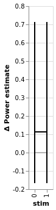
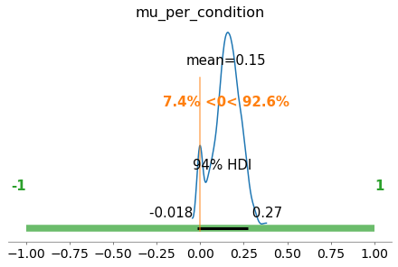
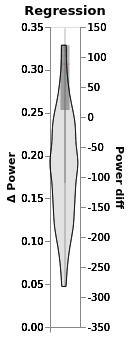
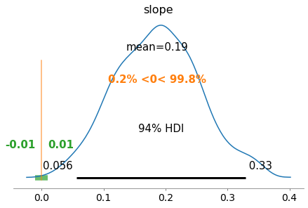
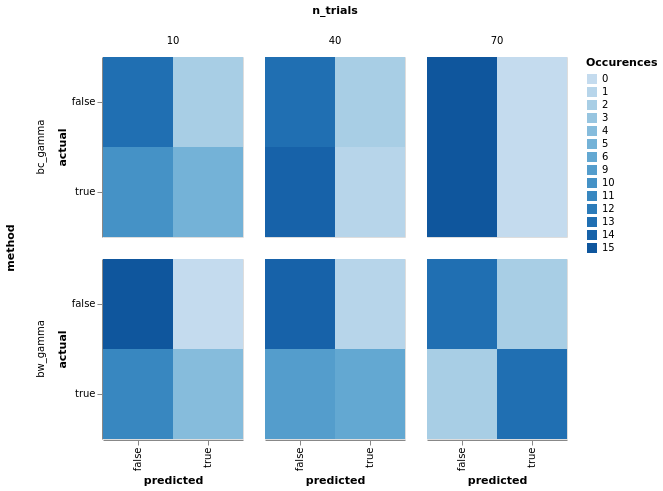
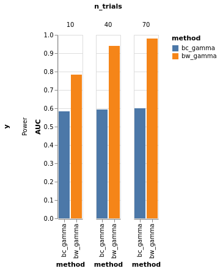
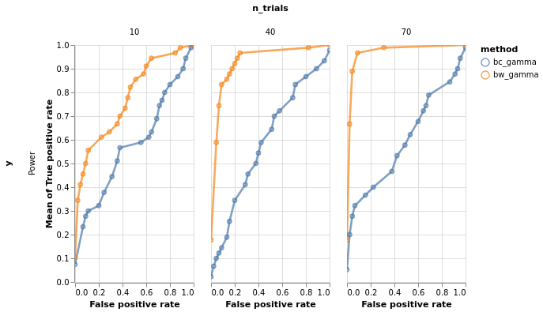
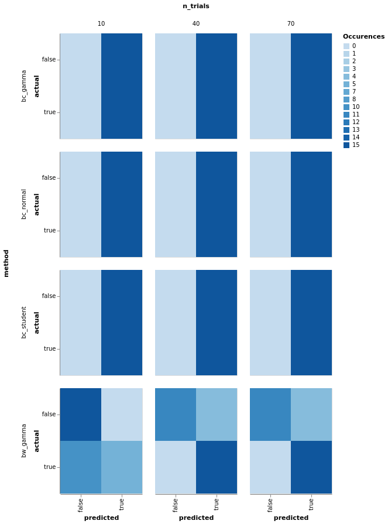
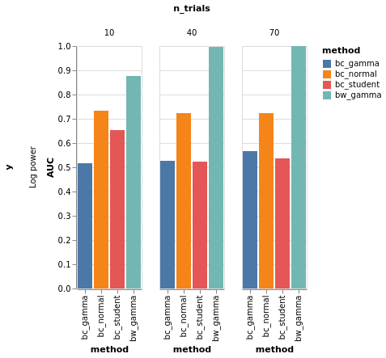
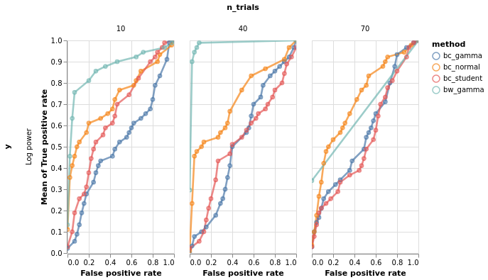

LFP example: regression vs estimation of difference¶
Make and visualize model oscillation power¶
40 trials of “theta power” is generated for every animal. It is drawn randomly as a poisson process.
This is repeated for “stimulation” trials, but poisson rate is higher.
import altair as alt
from bayes_window import BayesWindow, models, BayesRegression, LMERegression, BayesConditions
from bayes_window.generative_models import generate_fake_lfp
try:
alt.renderers.enable('altair_saver', fmts=['png'])
except Exception:
pass
# Draw some fake data:
df, df_monster, index_cols, _ = generate_fake_lfp(mouse_response_slope=15, n_trials=30)
Estimate posteriors for treatments¶
# Initialize:
window = BayesWindow(df=df, y='Power', #condition='stim',
group='mouse',
treatment='stim')
# Fit:
estimation = BayesConditions(window).fit(dist_y='gamma')
n(Divergences) = 47
estimation.plot(color=':O')#.facet(column='mouse')

estimation.plot_BEST()

Compare with regression approach¶
# Initialize:
# window = BayesWindow(df=df, y='Power', treatment='stim', group='mouse')
# Fit:
regression = BayesRegression(window).fit(model=models.model_hierarchical, add_group_intercept=True,
add_group_slope=False, robust_slopes=False,
do_make_change='subtract', dist_y='gamma')
(regression.chart + regression.chart_posterior_kde).properties(title='Regression')

regression.plot_BEST()

Evaluate sensitivity: CM¶
import numpy as np
from bayes_window import model_comparison, BayesWindow
from bayes_window.generative_models import generate_fake_lfp
y=Power¶
# NBVAL_SKIP
# Note: Only works with single ys and single true_slopes
res = model_comparison.run_conditions(true_slopes=np.hstack([np.zeros(15),
np.tile(10, 15)]),
n_trials=np.linspace(10, 70, 3).astype(int),
ys=('Power',),
methods=('bc_gamma','bw_gamma',),
parallel=True)
0%| | 0/270 [00:00<?, ?it/s]
4%|▍ | 12/270 [00:00<00:05, 47.27it/s]
4%|▍ | 12/270 [00:19<00:05, 47.27it/s]
9%|▉ | 24/270 [00:27<05:36, 1.37s/it]
13%|█▎ | 36/270 [00:58<07:26, 1.91s/it]
18%|█▊ | 48/270 [01:24<07:24, 2.00s/it]
22%|██▏ | 60/270 [02:09<09:13, 2.64s/it]
27%|██▋ | 72/270 [02:45<09:07, 2.77s/it]
31%|███ | 84/270 [03:14<08:12, 2.65s/it]
36%|███▌ | 96/270 [03:59<08:42, 3.00s/it]
40%|████ | 108/270 [04:33<07:56, 2.94s/it]
44%|████▍ | 120/270 [05:02<06:56, 2.78s/it]
49%|████▉ | 132/270 [05:47<07:03, 3.07s/it]
53%|█████▎ | 144/270 [06:20<06:16, 2.98s/it]
58%|█████▊ | 156/270 [06:52<05:29, 2.89s/it]
62%|██████▏ | 168/270 [07:34<05:12, 3.06s/it]
67%|██████▋ | 180/270 [08:03<04:19, 2.88s/it]
71%|███████ | 192/270 [08:39<03:47, 2.92s/it]
76%|███████▌ | 204/270 [09:22<03:25, 3.12s/it]
80%|████████ | 216/270 [09:53<02:39, 2.96s/it]
84%|████████▍ | 228/270 [10:23<01:58, 2.82s/it]
89%|████████▉ | 240/270 [11:06<01:31, 3.04s/it]
93%|█████████▎| 252/270 [11:42<00:54, 3.02s/it]
98%|█████████▊| 264/270 [12:13<00:17, 2.90s/it]
100%|██████████| 270/270 [12:13<00:00, 2.72s/it]
# NBVAL_SKIP
model_comparison.plot_confusion(
model_comparison.make_confusion_matrix(res[res['y'] == 'Power'], ('method', 'y', 'randomness', 'n_trials')
)).properties(width=140).facet(row='method', column='n_trials')

df = model_comparison.make_roc_auc(res, binary=False, groups=('method', 'y', 'n_trials'))
bars, roc = model_comparison.plot_roc(df)
bars.facet(column='n_trials', row='y').properties().display()
roc.facet(column='n_trials', row='y').properties()
# NBVAL_SKIP


y=Log power¶
# NBVAL_SKIP
# Note: Only works with single ys and single true_slopes
res = model_comparison.run_conditions(true_slopes=np.hstack([np.zeros(15),
np.tile(10, 15)]),
n_trials=np.linspace(10, 70, 3).astype(int),
ys=('Log power',),
methods=('bc_normal','bc_gamma','bc_student','bw_gamma',),
parallel=True)
0%| | 0/270 [00:00<?, ?it/s]
9%|▉ | 24/270 [00:47<08:08, 1.98s/it]
13%|█▎ | 36/270 [01:57<13:55, 3.57s/it]
18%|█▊ | 48/270 [03:01<15:42, 4.24s/it]
22%|██▏ | 60/270 [04:42<19:54, 5.69s/it]
27%|██▋ | 72/270 [05:47<18:29, 5.60s/it]
31%|███ | 84/270 [06:53<17:13, 5.56s/it]
36%|███▌ | 96/270 [08:38<19:05, 6.58s/it]
40%|████ | 108/270 [09:45<16:55, 6.27s/it]
44%|████▍ | 120/270 [10:48<14:51, 5.95s/it]
49%|████▉ | 132/270 [12:28<15:23, 6.69s/it]
53%|█████▎ | 144/270 [13:38<13:29, 6.42s/it]
58%|█████▊ | 156/270 [14:42<11:34, 6.09s/it]
62%|██████▏ | 168/270 [16:25<11:37, 6.84s/it]
67%|██████▋ | 180/270 [17:30<09:36, 6.40s/it]
71%|███████ | 192/270 [18:33<07:52, 6.06s/it]
76%|███████▌ | 204/270 [20:15<07:28, 6.79s/it]
80%|████████ | 216/270 [21:26<05:52, 6.53s/it]
84%|████████▍ | 228/270 [22:32<04:21, 6.24s/it]
89%|████████▉ | 240/270 [24:16<03:28, 6.94s/it]
93%|█████████▎| 252/270 [25:22<01:57, 6.53s/it]
98%|█████████▊| 264/270 [26:30<00:37, 6.27s/it]
100%|██████████| 270/270 [26:30<00:00, 5.89s/it]
# NBVAL_SKIP
model_comparison.plot_confusion(
model_comparison.make_confusion_matrix(res[res['y'] == 'Log power'], ('method', 'y', 'randomness', 'n_trials')
)).properties(width=140).facet(row='method', column='n_trials')

df = model_comparison.make_roc_auc(res, binary=False, groups=('method', 'y', 'n_trials'))
bars, roc = model_comparison.plot_roc(df)
bars.facet(column='n_trials', row='y').properties().display()
roc.facet(column='n_trials', row='y').properties()
# NBVAL_SKIP

